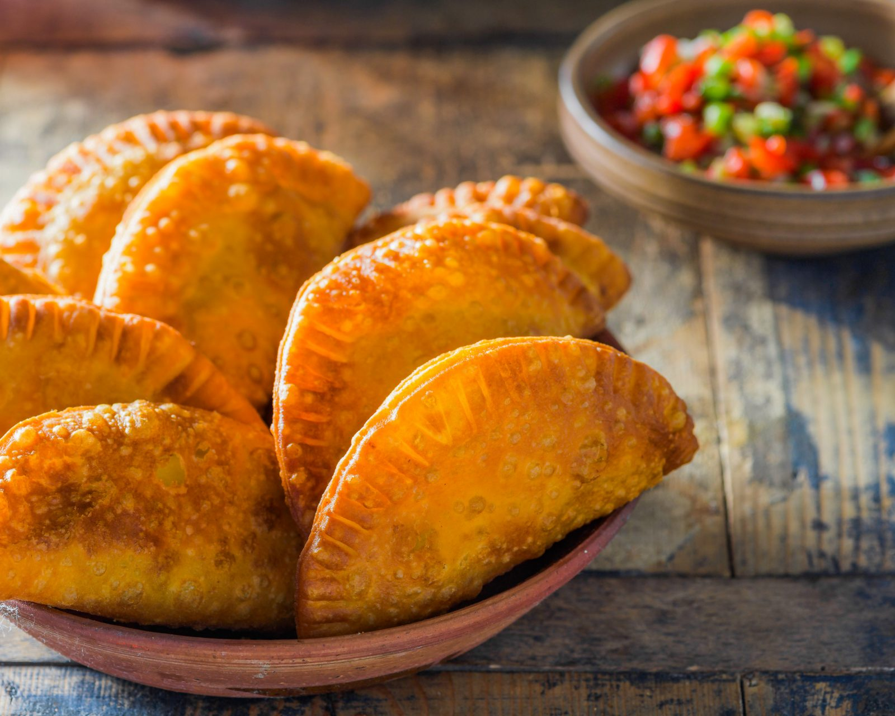

Empanadas (Beef Turnovers)

A simple recipe for delicious empanadas
This recipe is made with pastry rounds and a delicious filling of seasoned ground
beef, tomatoes, onions, and garlic. These can be enjoyed as an appetizer, a main dish
or even as a late night snack. If you want to spice them up add some delicious queso as
topping or anything you would like, make it your own as they are very customizable.
Ingredients
- 1 tablespoon Extra Virgin Olive Oil
- 1/2 pound ground beef
- 1/2 medium yellow onion, finely chopped
- 1/4 cup tomato sauce
- 6 Spanish olives stuffed with minced Pimientos, thinly sliced
- 2 tablespoons Goya Sofrito
- 1 packet of Sazon Goya with coriander and Annatto
- 1 teaspoon minced garlic
- 1/2 teaspoon dried oregano
- Ground black pepper to taste
- 1 14 ounce package of yellow or white empanada discs, thawed
- 1 quart Corn oil, for frying
Steps
- Gather all your ingredients
- Heat olive oil in a large skillet over medium heat. Add ground beef;cook and stir
until browned and crumbly, about 10 minutes. Add onions and cook until soft, about 5 minutes
- Stir in tomato sauce, sofrito, sazon, garlic, oregano, and pepper.
Reduce heat to medium-low and simmer until mixture thickens, about 15 minute
- Roll empanada disks on a lightly floured surface until 1/2 inch larger in diameter. Spoon about 1 tablespoon
meat mixture into the middle of each disk. Moisten the disk edges with water, fold in half over filling to
form a half-moon, and pinch to seal (or seal with a fork).
- Heat 2 1/2 inches corn oil in a deep-fryer or large saucepan to 350 degrees F (175 degrees C). Working in batches,
fry empanadas until crisp and golden brown, flipping once, 4 to 6 minutes.
- Transfer to paper towels to drain. Enjoy!